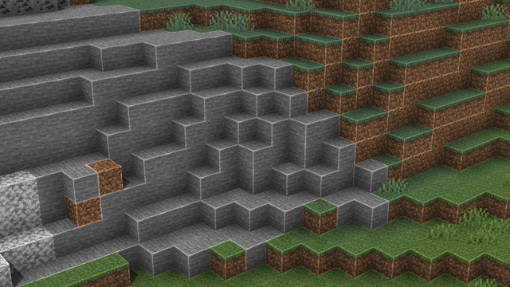
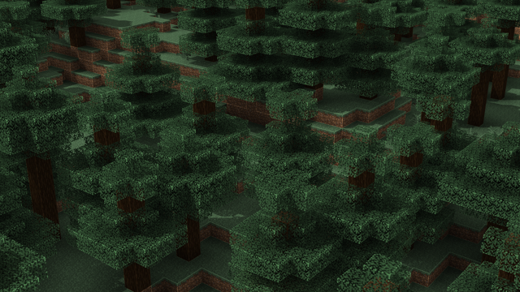
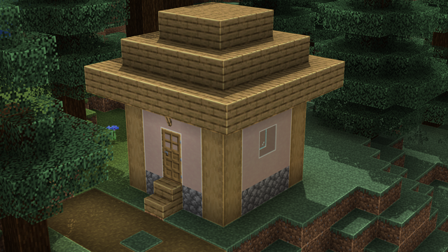
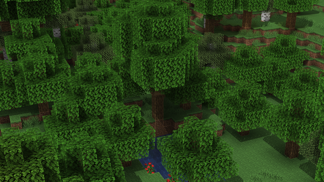

Borderlined
The pack that adds an outline to everything!
Download [Java]
This pack aims to immitate the look of the Minecraft Dungeons shader where all the blocks have a lighter outline around the edge of the blocks. Some blocks do not connect to eachother due to technical limitations. OptiFine Required
Here are some screenshots:



